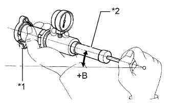

РАДИАТОР > ПРОВЕРКА БЕЗ СНЯТИЯ С АВТОМОБИЛЯ |
| 1. ПРОВЕРЬТЕ ПРОБКУ РАДИАТОРА В СБОРЕ |
 |
Измерьте давление открывания клапана.
Если на резиновых прокладках 1, 2 или 3 заметны пятна от воды или посторонние частицы, очистите их вручную водой.
Убедитесь, что резиновые прокладки 1, 2 и 3 не деформированы, не треснуты и не разбухли.
Убедитесь, что резиновые прокладки 3 и 4 не слиплись друг с другом.
Нанесите на резиновые прокладки 2 и 3 охлаждающую жидкость.
|  |
При использовании приспособления для опрессовки системы охлаждения и проверки пробки радиатора наклоните его под углом более 30°.
| *1 | Пробка радиатора |
| *2 | Приспособление для опрессовки системы охлаждения и проверки пробки радиатора |
| *3 | Более 30° |
Несколько раз накачайте воздух в приспособление и проверьте максимальное давление.*1
| Параметр / Устройство | Заданные условия |
| Номинальное значение (для новой пробки) | 93 - 123 кПа (1,0 - 1,3 кгс/см2, 13,5 - 18 фунтов на кв. дюйм) |
| Минимальное номинальное значение (для использованной пробки) | 79 кПа (0,8 кгс/см2, 11,4 фунта на кв. дюйм) |
| 2. ПРОВЕРЬТЕ СОСТОЯНИЕ ПЛАСТИН |
Если пластины забиты, промойте их водой или очистите пароочистителем и просушите сжатым воздухом.
| Давление подачи пара | Заданные условия |
| 2942–4903 кПа (30,0 - 50,0 кгс/см2, 427 - 711 фунтов на кв.дюйм) | 300 мм (11,8 дюйма) |
| 4903 - 7845 кПа (50,0 - 80,0 кгс/см2, 711 - 1138 фунтов на кв.дюйм) | 500 мм (19,7 дюйма) |
Осушите все пластины сжатым воздухом.